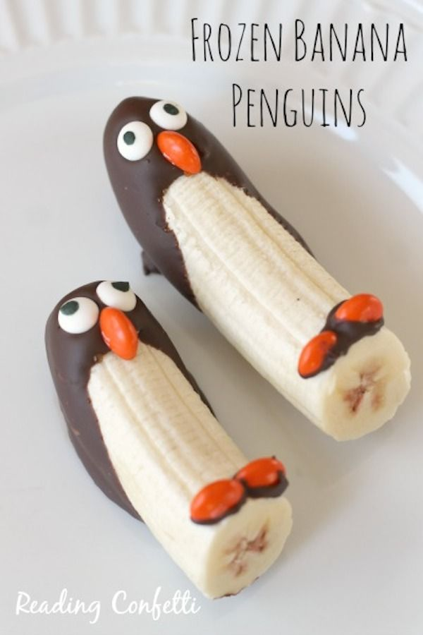

De todo el mundo
El postre es comúnmente una fruta o el plato de sabor dulce o agridulce que se toma al final de la comida. Cuando se habla de postres se entiende alguna preparación dulce, bien sean cremas, tartas, pasteles, helados, bombones, etc. Por extensión se denomina postre a cualquier comida dulce incluso si su objetivo no es ser ingerida al final de la comida.
